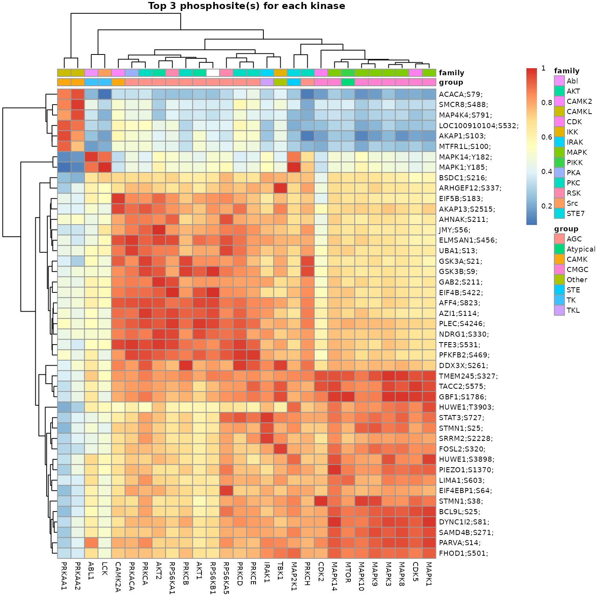
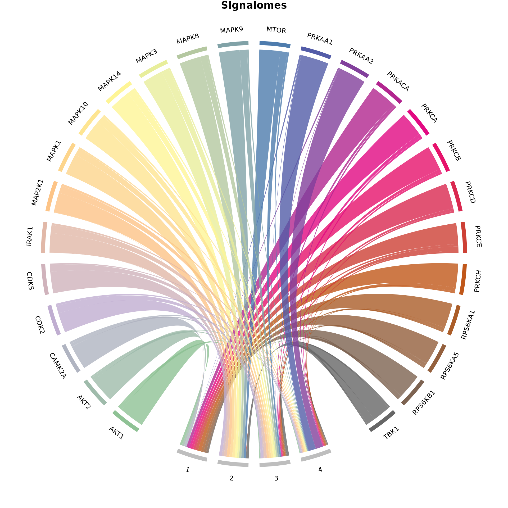
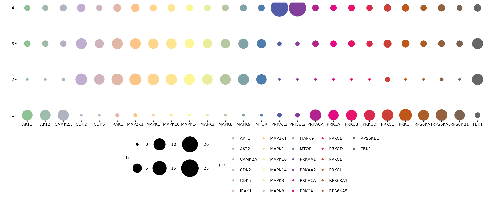
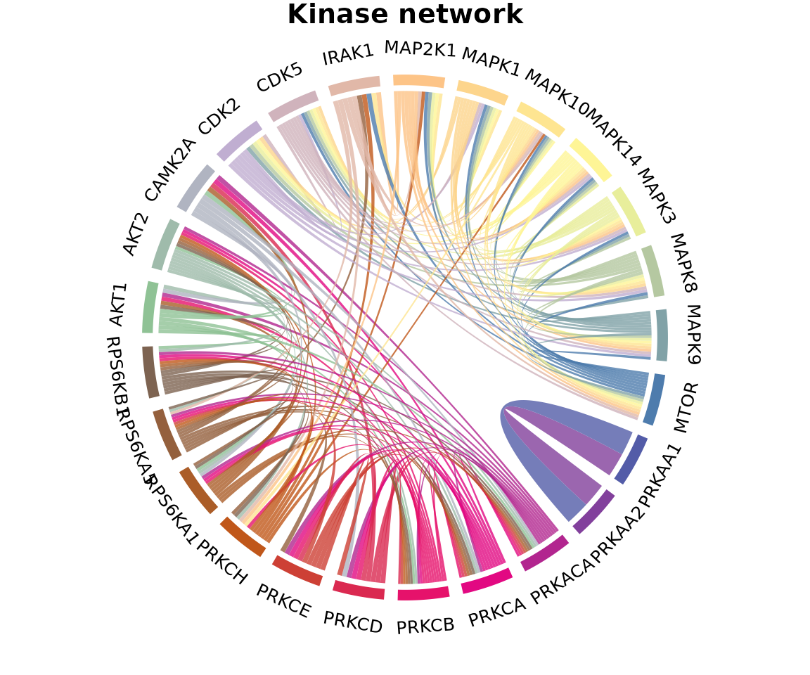

A key component of the PhosR package is to construct
signalomes. The signalome construction is composed of two main steps: 1)
kinase-substrate relationsip scoring and 2) signalome construction. This
involves a sequential workflow where the outputs of the first step are
used as inputs of the latter step.
In brief, our kinase-substrate relationship scoring method
(kinaseSubstrateScore and kinaseSubstratePred)
prioritises potential kinases that could be responsible for the
phosphorylation change of phosphosite on the basis of kinase recognition
motif and phosphoproteomic dynamics. Using the kinase-substrate
relationships derived from the scoring methods, we reconstruct signalome
networks present in the data (Signalomes) wherin we
highlight kinase regulation of discrete modules.
First, we will load the PhosR package along with few
other packages that we will be using in this section of the
vignette.
suppressPackageStartupMessages({
library(PhosR)
library(dplyr)
library(ggplot2)
library(GGally)
library(ggpubr)
library(calibrate)
library(network)
})We will also be needing data containing kinase-substrate annotations
from PhosphoSitePlus, kinase recognition motifs from
kinase motifs, and annotations of kinase families from
kinase family.
As before, we will set up the data by cleaning up the phoshophosite
labels and performing RUV normalisation. We will generate the
ppe_RUV matrix as in batch_correction.
data("phospho_L6_ratio_pe")
data("SPSs")
data("PhosphoSitePlus")
##### Run batch correction
ppe <- phospho.L6.ratio.pe
sites = paste(sapply(ppe@GeneSymbol, function(x)x),";",
sapply(ppe@Residue, function(x)x),
sapply(ppe@Site, function(x)x),
";", sep = "")
grps = gsub("_.+", "", colnames(ppe))
design = model.matrix(~ grps - 1)
ctl = which(sites %in% SPSs)
ppe = RUVphospho(ppe, M = design, k = 3, ctl = ctl)
phosphoL6 = ppe@assays@data$normalisedNext, we will filtered for dynamically regulated phosphosites and then standardise the filtered matrix.
# filter for up-regulated phosphosites
phosphoL6.mean <- meanAbundance(phosphoL6, grps = gsub("_.+", "", colnames(phosphoL6)))
aov <- matANOVA(mat=phosphoL6, grps=gsub("_.+", "", colnames(phosphoL6)))
idx <- (aov < 0.05) & (rowSums(phosphoL6.mean > 0.5) > 0)
phosphoL6.reg <- phosphoL6[idx, ,drop = FALSE]
L6.phos.std <- standardise(phosphoL6.reg)
rownames(L6.phos.std) <- paste0(ppe@GeneSymbol, ";", ppe@Residue, ppe@Site, ";")[idx]We next extract the kinase recognition motifs from each phosphosite.
L6.phos.seq <- ppe@Sequence[idx]Now that we have all the inputs for kinaseSubstrateScore
and kinaseSubstratePred ready, we can proceed to the
generation of kinase-substrate relationship scores.
L6.matrices <- kinaseSubstrateScore(substrate.list = PhosphoSite.mouse,
mat = L6.phos.std, seqs = L6.phos.seq,
numMotif = 5, numSub = 1, verbose = FALSE)
set.seed(1)
L6.predMat <- kinaseSubstratePred(L6.matrices, top=30, verbose = FALSE) The signalome construction uses the outputs of
kinaseSubstrateScore and kinaseSubstratePred
functions for the generation of a visualisation of the kinase regulation
of discrete regulatory protein modules present in our phosphoproteomic
data.
kinaseOI = c("PRKAA1", "AKT1")
Signalomes_results <- Signalomes(KSR=L6.matrices,
predMatrix=L6.predMat,
exprsMat=L6.phos.std,
KOI=kinaseOI)
We can also visualise the relative contribution of each kinase towards the regulation of protein modules by plotting a balloon plot. In the balloon plot, the size of the balloons denote the percentage magnitude of kinase regulation in each module.
### generate palette
my_color_palette <- grDevices::colorRampPalette(RColorBrewer::brewer.pal(8, "Accent"))
kinase_all_color <- my_color_palette(ncol(L6.matrices$combinedScoreMatrix))
names(kinase_all_color) <- colnames(L6.matrices$combinedScoreMatrix)
kinase_signalome_color <- kinase_all_color[colnames(L6.predMat)]
plotSignalomeMap(signalomes = Signalomes_results, color = kinase_signalome_color)
Finally, we can also plot the signalome network that illustrates the connectivity between kinase signalome networks.
plotKinaseNetwork(KSR = L6.matrices, predMatrix = L6.predMat, threshold = 0.9, color = kinase_all_color)
sessionInfo()
#> R version 4.6.0 (2026-04-24)
#> Platform: x86_64-pc-linux-gnu
#> Running under: Ubuntu 24.04.4 LTS
#>
#> Matrix products: default
#> BLAS: /usr/lib/x86_64-linux-gnu/openblas-pthread/libblas.so.3
#> LAPACK: /usr/lib/x86_64-linux-gnu/openblas-pthread/libopenblasp-r0.3.26.so; LAPACK version 3.12.0
#>
#> locale:
#> [1] LC_CTYPE=C.UTF-8 LC_NUMERIC=C LC_TIME=C.UTF-8
#> [4] LC_COLLATE=C.UTF-8 LC_MONETARY=C.UTF-8 LC_MESSAGES=C.UTF-8
#> [7] LC_PAPER=C.UTF-8 LC_NAME=C LC_ADDRESS=C
#> [10] LC_TELEPHONE=C LC_MEASUREMENT=C.UTF-8 LC_IDENTIFICATION=C
#>
#> time zone: UTC
#> tzcode source: system (glibc)
#>
#> attached base packages:
#> [1] stats graphics grDevices utils datasets methods base
#>
#> other attached packages:
#> [1] network_1.20.0 calibrate_1.7.7 MASS_7.3-65 ggpubr_0.6.3
#> [5] GGally_2.4.0 ggplot2_4.0.3 dplyr_1.2.1 PhosR_1.20.0
#>
#> loaded via a namespace (and not attached):
#> [1] gridExtra_2.3 rlang_1.2.0
#> [3] magrittr_2.0.5 otel_0.2.0
#> [5] matrixStats_1.5.0 e1071_1.7-17
#> [7] compiler_4.6.0 systemfonts_1.3.2
#> [9] vctrs_0.7.3 reshape2_1.4.5
#> [11] stringr_1.6.0 pkgconfig_2.0.3
#> [13] shape_1.4.6.1 fastmap_1.2.0
#> [15] backports_1.5.1 XVector_0.52.0
#> [17] labeling_0.4.3 rmarkdown_2.31
#> [19] preprocessCore_1.74.0 ragg_1.5.2
#> [21] purrr_1.2.2 xfun_0.58
#> [23] cachem_1.1.0 jsonlite_2.0.0
#> [25] DelayedArray_0.38.2 broom_1.0.13
#> [27] R6_2.6.1 bslib_0.11.0
#> [29] stringi_1.8.7 RColorBrewer_1.1-3
#> [31] limma_3.68.4 car_3.1-5
#> [33] GenomicRanges_1.64.0 jquerylib_0.1.4
#> [35] Rcpp_1.1.1-1.1 Seqinfo_1.2.0
#> [37] SummarizedExperiment_1.42.0 knitr_1.51
#> [39] IRanges_2.46.0 Matrix_1.7-5
#> [41] igraph_2.3.2 tidyselect_1.2.1
#> [43] abind_1.4-8 yaml_2.3.12
#> [45] viridis_0.6.5 lattice_0.22-9
#> [47] tibble_3.3.1 plyr_1.8.9
#> [49] Biobase_2.72.0 withr_3.0.2
#> [51] S7_0.2.2 coda_0.19-4.1
#> [53] evaluate_1.0.5 desc_1.4.3
#> [55] ggstats_0.13.0 proxy_0.4-29
#> [57] circlize_0.4.18 pillar_1.11.1
#> [59] BiocManager_1.30.27 MatrixGenerics_1.24.0
#> [61] carData_3.0-6 stats4_4.6.0
#> [63] generics_0.1.4 S4Vectors_0.50.1
#> [65] scales_1.4.0 BiocStyle_2.40.0
#> [67] class_7.3-23 glue_1.8.1
#> [69] pheatmap_1.0.13 tools_4.6.0
#> [71] dendextend_1.19.1 ggsignif_0.6.4
#> [73] fs_2.1.0 grid_4.6.0
#> [75] tidyr_1.3.2 colorspace_2.1-2
#> [77] Formula_1.2-5 cli_3.6.6
#> [79] ruv_0.9.7.1 textshaping_1.0.5
#> [81] S4Arrays_1.12.0 viridisLite_0.4.3
#> [83] ggdendro_0.2.0 pcaMethods_2.4.0
#> [85] gtable_0.3.6 rstatix_0.7.3
#> [87] sass_0.4.10 digest_0.6.39
#> [89] BiocGenerics_0.58.1 SparseArray_1.12.2
#> [91] htmlwidgets_1.6.4 farver_2.1.2
#> [93] htmltools_0.5.9 pkgdown_2.2.0
#> [95] lifecycle_1.0.5 GlobalOptions_0.1.4
#> [97] statnet.common_4.13.0 statmod_1.5.2